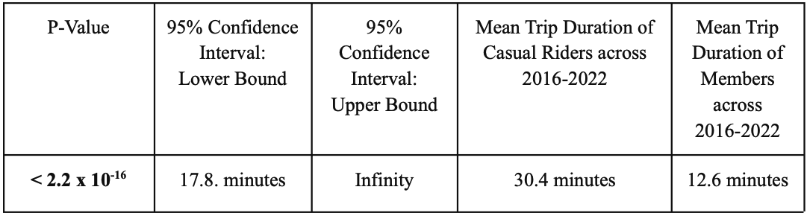
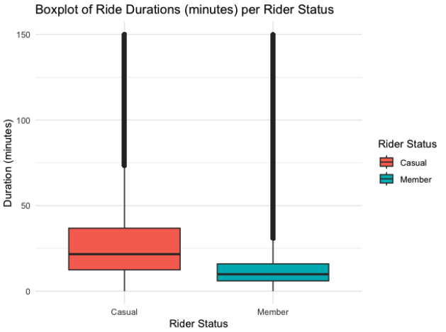
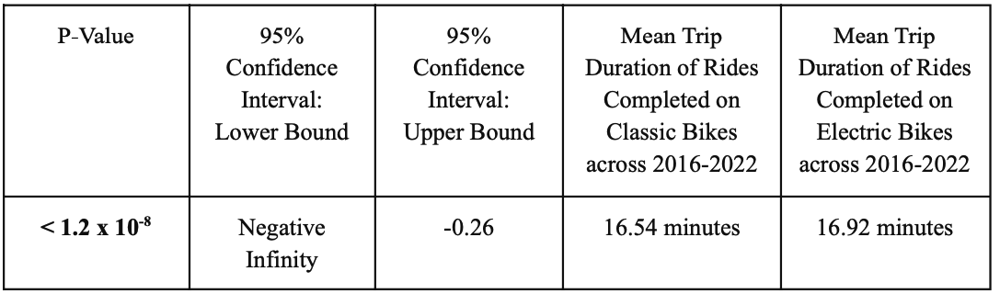
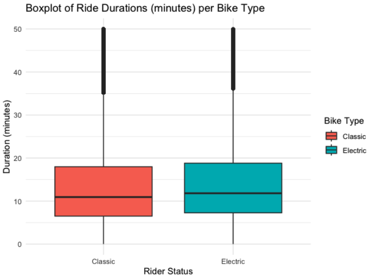
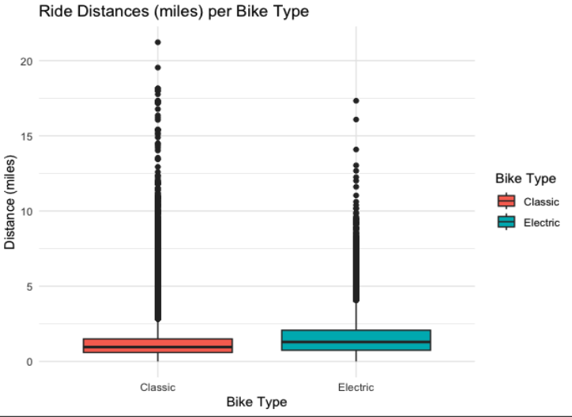
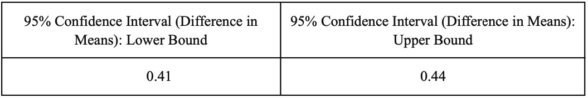
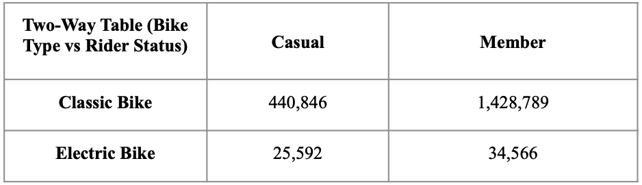
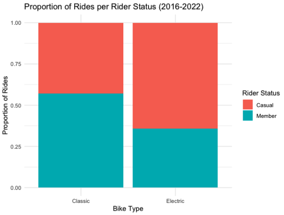
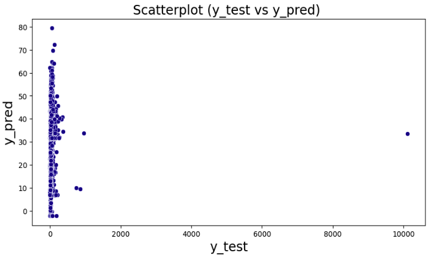

Four distinct hypothesis tests were completed throughout the project in the order presented below:
• 2 Two Sample t-tests
• 1 Bootstrap test
• 1 Chi squared test
Each test, its respective hypotheses, and its results are explained below:
The first hypothesis test included an analysis of seeing what statistical inference can be
extracted from the comparison of Membership status and Bike ride duration result in. A t-test
was chosen because its measurement is a direct result of comparing the means of the two
populations that are set as variables, as in this case between membership status and bike ride
duration. This comparison was chosen specifically to identify which members are using the bikes
the most and as a direct result identify any decisions that could be taken to address this
relationship. The null hypothesis and alternative hypothesis that were determined are listed
below:
H0: The mean trip duration of casual riders is the same as that of members across 2016-2022
H1: The mean trip duration of casual riders is more than that of members across 2016-2022
The results can be found in the table below:

With these entities set, the statistical inferences gathered from the test can be used to help identify which statement we can accept, above in Table 2, since the p-value is less than 0.05, we ran reject the null hypothesis with 95% confidence and conclude that that Mean trip duration of casual riders is Mean trip duration of members, which can be visualized below:

The second comparison was again conducted using another two sample t-Test. Its relation included bike type and bike ride duration as we sought to investigate what ways users would
prefer when commuting across the local area. Although it seems that the company seemed to overwhelmingly have classic bikes in stock (89%) in our exploratory analysis as depicted
with Figure 11, it was advisable to make this comparison to see what distinction can be drawn if there are so many classic bikes compared to electric bikes. The null hypothesis and alternative hypothesis that were determined are listed below:
H0: The mean trip duration on classic bikes is the same as that on electric bikes
H1: The mean trip duration on classic bikes is not the same as that on electric bikes
The results can be found in the table below:

As the above table shows, the p-value is less than 0.05, with that being said, we can reject the null hypothesis with 95% confidence and conclude that the mean trip duration on electric bikes is greater than the mean trip duration on classic bikes, which can be visualized in Figure 15 below:

With the third hypothesis test, it was chosen to conduct a bootstrap comparing the
distance traveled with the type of bike used by the user. The motivation behind this test came
from Figure 12. Its findings show that most bikes traveled at a median of 0.93 miles with outliers
removed. This was the initial outlook based on all bikes used, but a distinction needed to be
made to see which type of bike was used the most and in order to find that, the bootstrap method
allowed the variables to be sampled without replacement and create a distribution that would
imitate the data. The null hypothesis and alternative hypothesis that were determined are listed
below:
H0: The mean distance covered per trip on classic bikes is the same as that on electric bikes.
H1: The mean distance covered per trip on classic bikes is not the same as that on electric bikes.


After sampling, as seen in the table above, it was found that 0 is not within the confidence interval, and we can further reject the null
hypothesis and conclude the mean distance traveled on electric bikes is greater than the mean distance traveled on classic bikes.
Furthermore, according to the box plot, the classic bike mean distance traveled from the sampled distribution was around 1.116 miles
whereas the electric bike sample distribution was much larger at 1.540 miles. Both distributions seemed to follow a normal gaussian
distribution, yet the electric bike was more representative of that statement.
For the last hypothesis test, a chi square test of independence was performed to determine the relationship between bike rider status
and bike type. This relationship has many implications as riders may be more inclined to use specific bikes based on their personal needs.
The chi-square test can show a level of interdependence, which was why this test was examined. The chi-square test looks to evaluate
experimental and theoretical values where the sum of all those differences will be compared to the test statistic. The null hypothesis and
alternative hypothesis that were determined are listed on the next page:
H0: Bike rider status and bike type used are independent.
H1: Bike rider status and bike type used are dependent

The chi-square test value was 105,876 highlighting the difference between the observed and expected frequencies of the outcome, signifying how well the sample data matches the known characteristics of the larger population. The statistical results also presented us with a p-value less than 0.05 where we could reject the null hypothesis and conclude with 95% confidence that Bike Type and Rider Status are dependent.

In an effort to predict the amount of time users spend on the bike, a Linear regression model was used to input multiple variables that
may contribute to a desired prediction. To initiate this process, it was devised to cluster specific chosen variables first. As shown in
Figure 19, the distances in miles, bike type, and membership status were all used to train the model, and they were also used as variable
inputs for the clustered group, as shown by the distinct clustered group they were placed into“k_1” and “k_0”, while Figure 20 depicts the
chosen target variables that were used for predicting the model, distance in miles traveled.
Details about input variables:
• Bike type(r_classic_bike, r_docked_bike, and r_electric_bike): Provides the type of ride being used. These include ‘electric’, ‘classic’, and ‘docked’. With the hypothesis testing, we came to know that the mean distance traveled on electric bikes was more than that of casual bikes. So it’s pretty interesting to know how long people ride different types of bikes for their CaBi journey.
• Member type(M_member and M_casual): Now knowing the method in which members used CaBi as compared to a casual rider.
The hypothesis tests also provided an insight on how much a member uses an electric bike in comparison to the latter. Such fascinating
aspects contribute to the significance of this particular column in predicting the dependent variable.
• Distance of miles traveled (distance_miles): This is a feature-engineered column using the geospatial data that we had in the initial dataset. Start and end lats and longs along with other details such as Station name and number contributed to calculating the distance covered by a rider.
• K-means variable (k_1 and k_0): By using k-means, we divided certain areas of the map into different clusters. Based on the geospatial data, k-means clustering was achieved helping not only in Exploratory Data Analysis but also in Dimensionality Reduction.
Details about the dependent variable:
• Duration (minutes): How long, on average, does a user ride CaBi bikes across the DC-Arlington area? The response variable can help in providing better recommendations according to the bike-type. It can also let us know whether casual riders want to become CaBi members.
Performance metrics used to provide accuracy of our model:
• Mean absolute error: This is the average of absolute errors of all the data points in the given dataset. The models mean absolute error was set at 14.8.
• Mean squared error: This is the average of the squares of the errors of all the data points in the given dataset. The model's mean squared error was set at 25,133.51, which was relatively high.
• Median absolute error: This is the median of all the errors in the given dataset. The main advantage of this metric is that it filters any outliers within the data. A single bad data point in the test dataset wouldn't skew the entire error metric, as opposed to a mean error metric. The model's median absolute error was 4.97.
• Variance score: This score measures how well our model can account for the variation in our dataset. A score of 1.0 indicates that our model is perfect. Our model's variance score was 0.01, putting to emphasis its insignificant value.
• R2-score: This score refers to the coefficient of determination. This tells us how well the unknown samples will be predicted by our model. The best possible score is 1.0, but the score can be negative as well. The model's R2-score was 0.01, which restated that our model was insignificant.
Using this devised structure, the analysis and results shown from the linear regression model unfortunately do not provide sufficient evidence to predict the amount of time users will spend on the bikes. The statistics gathered from the model show a high mean squared error alongside an R2-value that highlighted the model is not fit for our data.

The above figure also shows how poorly linear regression performs for this problem, since the predictions with respect to the actual values are all over the place and there does not seem to be any consistency in performance. Also, the figure also showcases the presence of extreme outliers in the test data, with some durations exceeding 10,000 minutes. This information could be used later on when developing other models to improve their performance and the quality of the test data.